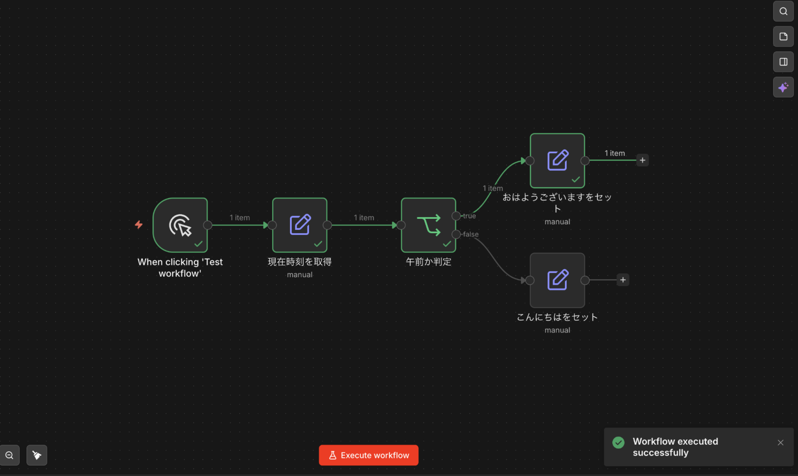
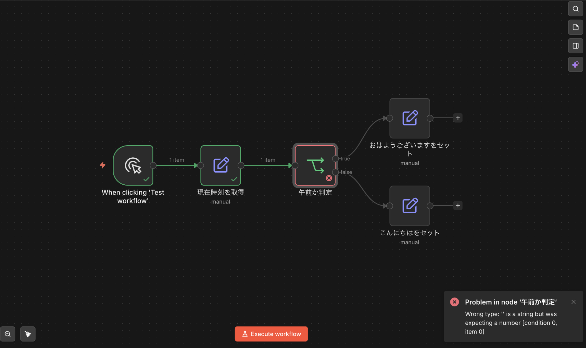

実習課題：初めてのn8nワークフローを作って動かそう（5ノード以内・分岐あり）
目的
セクション1では、自動化したい業務の要件定義書を作りました。セクション2では、実際にn8nの画面（キャンバス）を触り、「ノードを並べて線でつなぐ」基本操作に慣れます。
この課題の目的は、小さくても自分の手で動くワークフローを1つ作ることです。大きな業務を自動化する必要はありません。5ノード以内・分岐つきの小さなプロトタイプを実際に動かして「自分でもできる」という感覚を掴むのがゴールです。
課題
n8nのキャンバス上に、以下の条件を満たす小さなワークフローを作成し、実行して動かしてください。
- ノード数は5個以内（少ないほど推奨）
- 分岐（If または Switch）を1つ以上含む
- すべてのノードが線でつながっていて、実行したら最後まで処理が流れること
題材（何をするフローか）は自由です。業務に関係のない「お試し」で構いません。動画で使った題材を真似てもOKです。
成果物
- ワークフロー全体＋実行成功時の画面スクリーンショット ── 以下の条件を満たす1枚の画像：
- すべてのノードが1画面に収まっており、線でつながっている
- 実行した際に各ノードが緑色のチェックで表示されている（=正常実行）
- 赤いエラー表示（×印／赤枠）が出ていない
- 各ノードの役割メモ ── 各ノードが「何をするノードか」を1〜2行で説明したもの
提出するスクリーンショットのイメージは以下の通りです。

✅ 提出OKの例：すべてのノードが緑のチェックで表示されている（「時刻で挨拶を分岐」フロー）

❌ 提出NGの例：ノードが赤く表示されエラーで止まっている
手順
ステップ① テーマを決める（何をするフローか）
n8n内蔵のノード（Manual Trigger／Edit Fields (Set)／If／Switch／Code など）だけで完結する、ごく簡単な処理を考えます。外部サービス（Gmail／Slack／Geminiなど）と繋いでもOKですが、まず動かすことを優先するなら内蔵ノードだけで十分です。
テーマの例（内蔵ノードのみで作れるもの）
- 時刻で挨拶を分岐：現在時刻をセット → If（12時より前か？）→ 「おはようございます」or「こんにちは」をセット
- 数字の偶奇判定：適当な数字をセット → If（2で割った余りが0か？）→ 「偶数です」or「奇数です」をセット
- 天気で服装を提案：天気（"晴れ"／"雨"）をセット → Switch → それぞれに合った服装メッセージをセット
- 点数でランク分け：点数をセット → Switch（80以上／50以上／それ以下）→ "A" / "B" / "C" のランクをセット
テーマの例（動画の題材を真似する場合）
- 動画3のGmail→Gemini要約フローの縮小版（Gmail/Gemini接続が設定済みの人向け）
- 動画4の件名「緊急」分岐フローの縮小版
動画をそのままなぞる場合は、5ノード以内に収まるよう一部を省略してOKです。
ステップ② ワークフローを組む
- n8nのダッシュボードから新しいワークフローを作成（「+」ボタン／「Start from scratch」など画面のボタン）
- 最初のノードに Manual Trigger を置く（「手動で実行する」スタート地点）
- ステップ①で決めたテーマに沿って、ノードを追加し線でつなぐ
- 分岐ノード（If または Switch）の条件を設定する
- 各ノードのパラメータ（入力値・条件など）を埋める
- ワークフローに分かりやすい名前を付けて「Save」ボタンで保存する
ステップ③ 実行する
- キャンバス下部中央の「Execute workflow」ボタン（三角フラスコのアイコン付き）をクリック
- 各ノードに緑のチェックが付き、最後まで処理が通ることを確認
- 実行が成功すると、画面右下に「Workflow executed successfully」の緑色の通知が表示される
エラーで止まったときは
- 赤くなったノードをクリックして、エラーメッセージを確認する
- よくある原因：必須項目が未入力／データの参照名（変数名）が間違っている／分岐条件が成立していない（例：「Wrong type: '' is a string but was expecting a number」など）
- 動画を見直す／AIにエラーメッセージを貼り付けて原因を聞く、で大体解決します（この"デバッグ"自体はセクション6で詳しく扱います）
ステップ④ スクリーンショットを撮って提出
ワークフローを実行してすべてのノードが緑のチェックマークになった状態で、1画面に収まるようにズームアウトしてスクリーンショットを撮影してください。赤いエラー表示が出ていないことを確認してから撮るのがポイントです。
提出物
以下のテンプレートに内容を入れて提出してください。
■ ワークフロー名：（ここに記入）
■ 作ったフローの説明（3〜5行）：
（例：現在時刻を取得し、12時より前なら「おはようございます」、
以降なら「こんにちは」とメッセージをセットするフロー）
■ 各ノードの役割メモ：
ノード1（Manual Trigger）：手動でフローを起動する
ノード2（Edit Fields）：現在時刻をセットする
ノード3（If）：時刻が12時より前かどうかで分岐する
ノード4（Edit Fields）：「おはようございます」をセットする
ノード5（Edit Fields）：「こんにちは」をセットする
---
■ スクリーンショット：
（ワークフロー全体＋すべてのノードが緑のチェックで正常実行された状態の画面。
赤いエラー表示がなく、ノードが緑表示になっているもの）